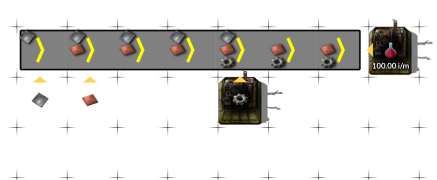
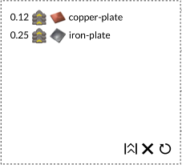
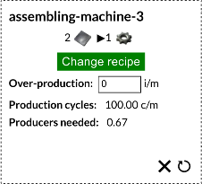

Beltaplan help
Beltaplan is a web tool to help you plan a rough outline of your Factorio base. It covers a middle ground between tools like Factorio Calc and the Factorio game itself.
You design a model of you factory, with your buses and factory lines, while omiting details such as the concrete layout, width of the buses and number of factories on your factory line. What Beltaplan does for you is:
- Fact-checking: If there is no way to get resources to the factory (it is not connected by bus to any producer), a warning sign will pop-up.
- Capacity planning: Beltaplan will automatically computed the needed amount of factories.
- Item flow visualisation: You can see which items are transported on your bus, based on the planned capacity and factory connections.
Compared to Factorio Calc you get some flexibility in exchange for needing to model your production chain:
- Query multiple resources with shared production chain
- Query the bus demands at various points on the bus
- Multiple levels of assembly machines in different parts of factory
- Complex chain setup with partially shared resources. Some resource might be produced on the spot, some transported on the main bus
Example
A model of a simple red science factory could look like this:

The production quota for the red science in the factory above was set to 100 items per minute. No we can see how wide the bus between the iron gear factory and copper/iron plate source will need to be and how much iron gear factories we will need:
 
Model mechanics
The Factorio base model consists of lines of factories (assembling machines, furnaces, refineries, chemical plants and rocket silos) connected by buses (multiple belts) that transport input of one factory to the output of another.
The model is grid-based, like Factorio itself. The bus is a one way set of belts, very similar to the in-game belt. The only difference is you do not need to use splitters, a bus can naturaly branch into two directions.
Once you set-up the buses and factories, use the Recalculate button to recompute the supply chain in your factory. It helps to know how this process works, so that you can use Beltaplan efficiently:
- First beltaplan finds connections between the factories. For each factory and each resource type needed by that factory, it finds a factory that is supplying this kind of resource. There must exist a path on the bus from the supply factory and a factory with a shortest path is chosen.
- Next, beltaplan computes the resource demands. It starts from factories that are at the top of the supply chain takes their over-production quotas, computes the resource needed to produce them and works down the supply chain
- It displays a resource on the bus if a connection between factories uses this bus segment as a path to carry that resource.
Apart from factories and buses, you can use other special entitities to better control the model. Sources are used to introduce a resource into your factory. They are usually used for raw resources like ores. Sinks can be used to impose a production quota and are just an alternative to over-production quotas set on factories. Filter can be used to manipulate the pathfinding between factories. If a filter is placed on the bus it will block items from flowing through.
Usage
Move around the factory plan using WSAD as in Factorio. To open a new clear plan, click the
"Open icon" in the toolbox next to plan name.
Select a building to place from the right toolbox and click to place. R rotates the building, Q
cancels the placement mode. Click on buildings to select them and see details. Delete building with Delete. Click
the down arrow near Factory button to select factory type.
Once you are happy with the model, hit the Recalculate button to update the bus connections (see section above).
Limitations
Currently, there is no way to model proper advanced oil processing workflow, since a consumer can only by connected to one producer. This assumption is violated by the cracking process, where a consumer of petroleum gas should be connected to both the refinery and the cracking chemical plant.
There is no direct support for logistic network. However, the logistic network can be modeled as a bus too, most of the time. If you just want to take the "I dont'care approach", make a circular bus and place all the factories supplied by logistic network on it so that all of them will be connected together.
Underground buses are not supported.